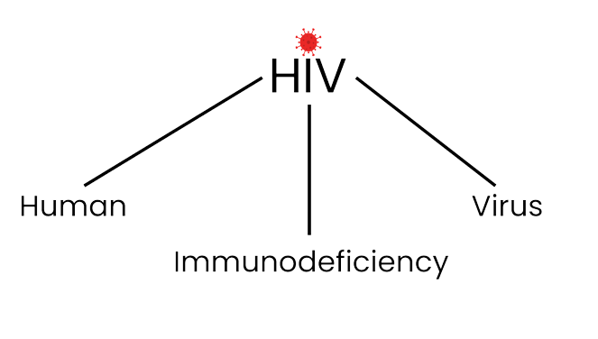
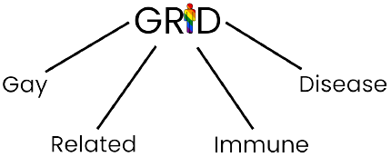
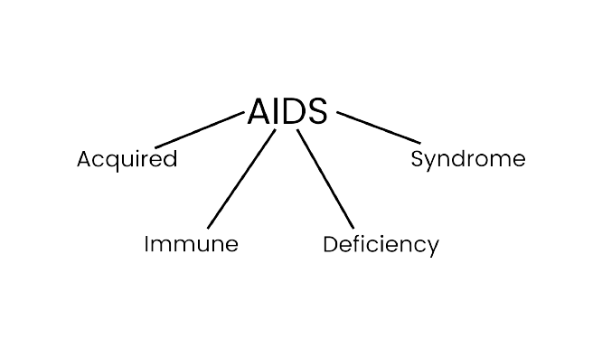

What is HIV?
HIV stands for Human Immunodeficiency Virus, in other words:
Human virus that breaks down the immune system.
It is a virus that decreases the number of white blood cells by infecting the cells of the human immune system.
This results in a weakened immune system and makes it harder to fight off germs and common illnesses. Infections will also last longer, are more severe, and might come back more often.
When people with HIV don't get treatment, they typically progress through 3 stages:
- Fever
- Headache
- Rash
- Chills
- Night sweats
- Muscle aches
- Sore throat
- Fatigue
- Swollen lymph nodes
- Mouth ulcers
- Swollen lymph glands
- Skin rashes
- Oral sores
- Fatigue
- Rapid weight loss
- Recurring fever or profuse night sweats
- Extreme and unexplained tiredness
- Prolonged swelling of the lymph glands in the armpits, groin or neck
- Diarrhea that lasts more than a week
- Sores of the mouth, anus or genitals
- Pneumonia
- Red, brown, pink or purplish blotches on or under the skin or inside the mouth, nose or eyelids
- Memory loss, depression and other neurological disorders
- By having sex.
- You can get infected if you have vaginal, anal or oral sex with someone whose HIV infected blood, semen or vaginal secretions enter your body. The virus can enter your body through mouth sores or small tears that sometimes develop in the rectum or vagina during sexual activity.
- By sharing needles.
- Sharing drug needles and syringes contaminated with HIV puts you at high risk of getting infected.
- From blood transfusions.
- The virus can also be transmitted through blood transfusions. American hospitals and blood banks now screen the blood supply for HIV antibodies, so this risk is very small.
- During pregnancy or delivery or through breast-feeding.
- Infected mothers can pass the virus on to their babies. Mothers who are HIV-positive and get treatment for the infection during pregnancy can significantly lower the risk to infect their babies.
- HIV Effects on the Immune System
- Opportunistic infections.
- Candidiasis
- Pneumocystis pneumonie (PCP)
- Mycobacterium avium complex (MAC)
- Cytomegalovirus
- Kaposi's sarcoma
- Lymphoma
- Tuberculosis
- Salmonella septicemia
This stage generally develops within 2-4 weeks after infection with HIV. In the acute stage of infection, HIV multiplies rapidly and spreads throughout the body. The level of HIV in the blood is also very high, which greatly increases the risk of HIV transmission.
Possible symptoms:
This is the stage where HIV continues to multiply in the body but at very low levels and is also called asymptomatic HIV infection or clinical latency.
Without antiretroviral therapy (ART), chronic HIV infection usually advances to AIDS in about 10 years, but people who are taking ART may be in this second stage for several decades. While it is still possible to transmit HIV, people who take ART exactly as prescribed have a significant lower risk of transmitting HIV through sex.
Possible symptoms:
AIDS stands for Acquired Immunodeficiency Syndrome and is the last and most severe stage of HIV infection. In this stage the immune system is so weakened that it can no longer defend you and life-threatening infections or cancers can occur. Once a person is diagnosed with AIDS, they can transmit HIV to others very easily. Without treatment, people with AIDS typically survive about 3 years.
Possible symptoms:
Causes of HIV
HIV can be transmitted if bodily fluids such as infected blood, semen and pre-cum, vaginal fluids and breast milk, come in contact with a person's mucous membrane or bloodstream.
This means that you can contract HIV in the following situations:Effects of HIV
Your immune system has many types of white blood cells that fight infections. HIV gets inside a kind called CD4 cells and makes copies of itself. The virus kills the cell, and the new viruses go off to find more.
Your body responds by making more CD4 cells, but after a while it can't keep up with the virus. This makes your immune system weak, which makes you more likely to get sick, even from common germs. Infections also last longer, are more severe, and might come back more often.
These infections happen more often or are more severe in people who have weakened immune systems.
Some common ones are:Preventions
HIV can become a serious problem but luckily there are many ways to prevent the spreading of HIV such as:
Sexual activities
You can start by choosing less risky sexual activities that dont include coming into contact with HIV transmitting body fluids such as oral sex, instead of anal or vaginal sex, since there is no risk of getting HIV through oral sex. Make sure that when using condoms to protect yourself and others you wear it the right way.
Drug injectionsIt isn't recommended to inject drugs, but if you do, only use new, clean and sterile injection equipment and water and never share your equipment with others.
PrepIf you haven't gotten HIV but you are at risk, you can start by using prep medication prescribed by your doctor. Prep is highly effective at reducing the risk of getting HIV through sex or drug injections.
Mother-to-child transmissionHIV can be transmitted from a mother to her child during pregnancy, childbirth and breastfeeding. Before you decide to get pregnant you and your partner can both get tested for HIV. You can also consider getting medications from your doctor such as prep to protect you and your baby from getting HIV
PEPPEP is a medication that should be used only in emergency situations and must be started within 72 hours after a recent possible exposure to HIV. If you're prescribed PEP, you'll need to take it daily for 28 days.
Get tested for HIVTesting is important because it is the only way to know if you have HIV. The sooner that HIV is detected, the sooner medical care can begin. Getting early HIV treatment will help keep you healthy and prevent HIV from affecting how long you live or how well you feel.
History
In 1981, the world was met with a new deadly disease. Gay men especially showed a variety of infections and were so weakened that they eventually died. Because of this everyone thought it was a sexually transmitted disease amongst gay men and named the disease GRID, Gay Related Immune Disease.
It was later discovered that the disease also affected injecting drug users, people who had received donated blood and heterosexuals. In Africa, the epidemic was already much bigger and the disease was given the name AIDS, which stands for Acquired Immune Deficiency Syndrome. In 1983 the virus that causes AIDS was found and was called HIV, which stands for Human Immunodeficiency Virus.
